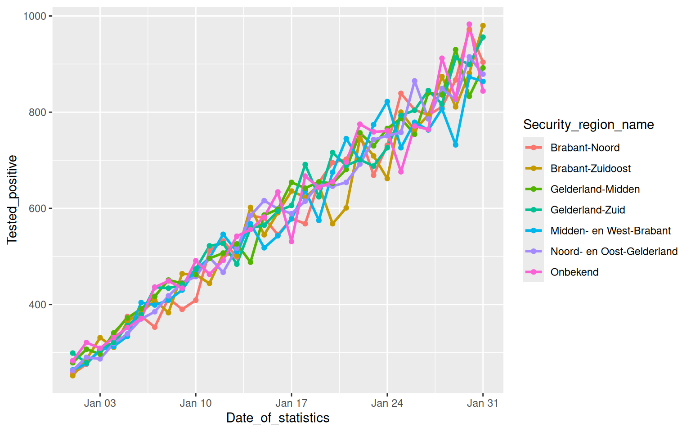
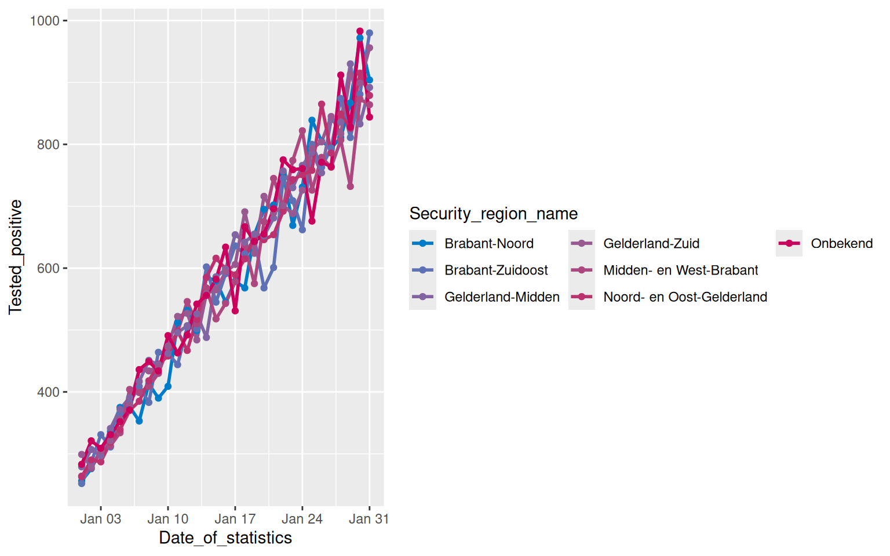
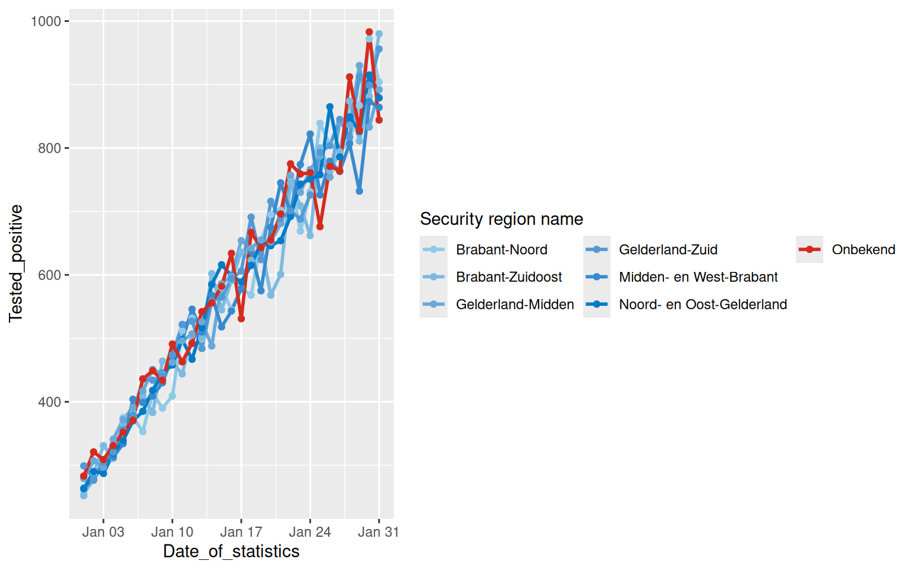

Working with Color Palettes
In the Getting started with ROvis vignette you learned how to explore colors and how to use the ro_color() function in your ggplots. You also learned how to use the categorical color palette. However, ROvis also has functions to create color sequences to help you with visualizing ordinal and continuous data.
Loading data
First, we need to load the required packages.
Second, we generate simulated data that mimics the structure of COVID-19 test data. We will use data for January 2022 for example graphs.
# Set seed for reproducibility
set.seed(123)
# Generate data for multiple regions used in the examples
dat_test_cov <- expand_grid(
Date_of_statistics = seq(as_date("2022-01-01"), as_date("2022-01-31"), by = "day"),
Security_region_name = c(
"Brabant-Noord",
"Brabant-Zuidoost",
"Midden- en West-Brabant",
"Noord- en Oost-Gelderland",
"Gelderland-Midden",
"Gelderland-Zuid",
"Onbekend"
)
) |>
mutate(
# Calculate day number (1-31) for upward trend
day_num = as.numeric(Date_of_statistics - as_date("2022-01-01")) + 1,
# Generate test numbers with slight variation
Tested_with_result = as.integer(round(rnorm(n(), mean = 1800, sd = 50))),
# Positive tests with steep upward trend: start at ~15% and increase to ~50%
positive_rate = 0.15 + (day_num - 1) * (0.50 - 0.15) / 30,
Tested_positive = as.integer(round(
Tested_with_result * positive_rate * rnorm(n(), mean = 1, sd = 0.05)
))
) |>
select(Date_of_statistics, Security_region_name, Tested_positive) |>
mutate(Security_region_name = factor(Security_region_name)) |>
as_tibble()The first 5 rows look like this:
dat_test_cov |>
head(5)# A tibble: 5 × 3
Date_of_statistics Security_region_name Tested_positive
<date> <fct> <int>
1 2022-01-01 Brabant-Noord 256
2 2022-01-01 Brabant-Zuidoost 252
3 2022-01-01 Midden- en West-Brabant 264
4 2022-01-01 Noord- en Oost-Gelderland 263
5 2022-01-01 Gelderland-Midden 279Coloring ordinal data
Create a color sequence
Using a color sequence can be useful for coloring ordinal data. We can use the ro_color_seq function to create a color sequence. Let’s create a sequence from light to dark ‘hemelblauw’:
ro_color_seq(ro_color("hemelblauw_tint15"), ro_color("hemelblauw"), 5)[1] "#D9EBF7" "#B2CEEB" "#89B1DF" "#5B95D3" "#007BC7"We can visually inspect our sequence with show_colors:
ro_show_colors(
"custom",
ro_color_seq(ro_color("hemelblauw_tint15"), ro_color("hemelblauw"), 5)
)We can also create a color sequence from one color flowing into another color. For example start with ‘robijnrood’ and end with ‘hemelblauw’:
ro_color_seq(ro_color("hemelblauw"), ro_color("robijnrood"), 8)[1] "#007BC7" "#5772B7" "#7869A7" "#8F5E98" "#A15189" "#B1427A" "#BE2E6B"
[8] "#CA005D"We can visually inspect our sequence with show_colors:
ro_show_colors(
"custom",
ro_color_seq(ro_color("hemelblauw"), ro_color("robijnrood"), 8)
)How to use ro_color_seq() in ggplot functions
To demonstrate the use of a color sequence in a ggplot graph, we select the security regions in “Brabant” using filter. We start by creating a plot without specifying colors. Thus, the resulting plot shows standard colors of ggplot.
(Please note: for the sake of this example, categorical data is used. However, color gradients are especially powerful in visualizations of ordinal or continuous data).
tab_brab_geld <- dat_test_cov |>
filter(
Security_region_name %in%
c(
"Midden- en West-Brabant",
"Brabant-Noord",
"Brabant-Zuidoost",
"Noord- en Oost-Gelderland",
"Gelderland-Midden",
"Gelderland-Zuid",
"Onbekend"
)
) |>
# For the sake of the example, other levels get dropped from `Security_region_name`.
mutate(Security_region_name = droplevels(Security_region_name))
fig_brab_geld <- tab_brab_geld |>
ggplot(aes(
x = Date_of_statistics,
y = Tested_positive,
color = Security_region_name
)) +
geom_line(linewidth = 1) +
geom_point()
fig_brab_geld
We can apply the RIVM colors by using ro_color_seq(). We will also make the legend items appear in three rows for readibility:
fig_brab_geld +
scale_color_manual(
values = c(ro_color_seq(ro_color("hemelblauw"), ro_color("robijnrood"), 7)),
guide = guide_legend(nrow = 3)
)
How to use ro_color_seq_named() in ggplot functions
When including an explicit “Not available” category (e.g., “NA”), it can be helpful to use the ro_color_seq_named() function. This function works similarly to ro_color_seq(), but it directly assigns colors to the specified category names. This allows for more precise control over color mapping in ordered visualizations.
tab_brab_geld |>
ggplot(aes(
x = Date_of_statistics,
y = Tested_positive,
color = Security_region_name
)) +
geom_line(linewidth = 1) +
geom_point() +
scale_color_manual(
name = "Security region name",
values = ro_color_seq_named(
cat_names = levels(tab_brab_geld$Security_region_name),
low_col = "lichtblauw",
high_col = "hemelblauw",
NA_cat_name = "Onbekend",
NA_cat_col = "rood"
),
guide = guide_legend(nrow = 3)
)